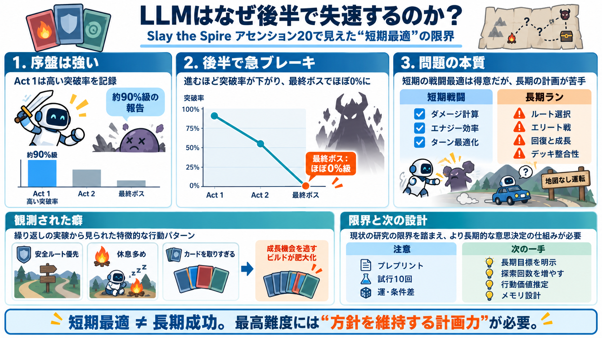

SpireBench: Evaluating Long-Horizon Strategic Play of Agentic Models with Slay the Spire
The twelve-game benchmark Orak (Park et al., 2026) drives the real game through the CommunicationMod harness (ForgottenA…

The twelve-game benchmark Orak (Park et al., 2026) drives the real game through the CommunicationMod harness (ForgottenA…
SpireBench # SpireBench A reproducible LLM benchmark onSlay the Spire 2 played through the `HermesBridge` mod. Each ru…
My bot got as far as the second boss using Claude Haiku, the long term planning needed to beat bosses requires picking t…
A significant difference in normalized entropy was observed between the Victory and Defeat groups across all acts. The t…
The contribution of this paper is an artifact in the form of an Artificial Neural Network (ANN) that predicts a path for …